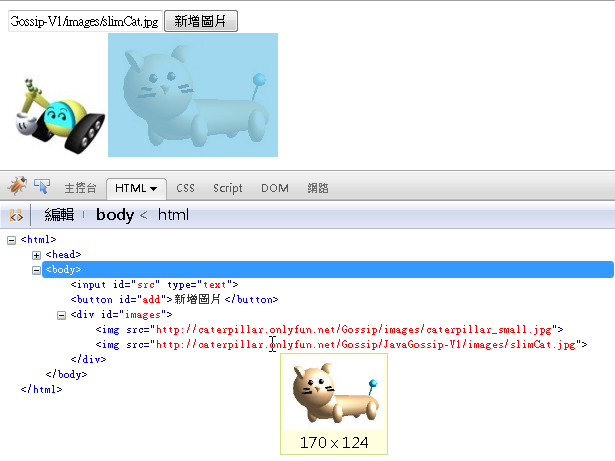

瀏覽器剖析完HTML後，建立的DOM元素會組成樹狀結構，瀏覽器上呈現的畫面，就是根據DOM樹繪製出來，你只要改變DOM樹，瀏覽器就會根據改變後的DOM樹重繪畫面，而這就構成動態修改文件的基本原理。
底下這個範例示範如何動態新增與刪除圖片：
<html>
<head>
<title>ModifyNodes-1</title>
<meta content="text/html; charset=UTF-8" http-equiv="content-type">
<script type="text/javascript">
window.onload = function() {
document.getElementById('add').onclick = function() {
var img = document.createElement('img');
img.src = document.getElementById('src').value;
img.onclick = function() {
document.getElementById('images').removeChild(this);
};
document.getElementById('images').appendChild(img);
};
};
</script>
</head>
<body>
<input id="src" type="text"><button id="add">新增圖片</button>
<div id="images"></div>
</body>
</html>
在原本的HTML中，並沒有任何的<img>元素，當你在文字方塊中輸入圖片的網址並按下按鈕時，會使用document的createElement()來動態建立元素，此時這個元素並沒有繫結至DOM樹，所以還不會出現在畫面上，接著你設定建立的圖片元素src為輸入的網址，並註冊按下圖片時，使用removeChild()將圖片本身（this）從id為images的<div>中移除，最後，將這個動態建立的圖片元素使用appendChild()附加至id為images的<div>元素成為其子元素，此時瀏覽器根據DOM樹結構重繪畫面。
當你使用JavaScript動態改變DOM樹時，在瀏覽器的檢視網頁原始碼中，是看不到動態調整後的HTML（那是一開始載 入的靜態HTML），你要使用DOM Inspector之類的工具，才能看到動態的DOM畫面。例如Firebug的DOM Inspector：

每個節點都只能有一個父節點，如果你直接取得DOM樹中既有的節點，並使用appendChild()將之附加至另一個節點，則表示節點會從原有的父節點脫離，再附加至另一節點。例如：
<html>
<head>
<title>ModifyNodes-2</title>
<meta content="text/html; charset=UTF-8" http-equiv="content-type">
<script type="text/javascript">
window.onload = function() {
document.getElementById('image').onclick = function() {
var container1 = document.getElementById('container1');
var container2 = document.getElementById('container2');
if(this.parentNode === container1) {
container2.appendChild(this);
}
else {
container1.appendChild(this);
}
};
};
</script>
</head>
<body>
容器一：<div id="container1">
<img id="image" src=
"https://openhome.cc/Gossip/images/caterpillar_small.jpg"/>
</div><br>
容器二：<div id="container2"></div>
</body>
</html>
在這個例子中，點選圖片，會將圖片來回附加於兩個<div>之間，由於一個節點只能有一個父節點，所以appendChild()的動作，會使被附加的節點從原父節點脫離。
createElement()是用來建立標籤對應的元素，如果要建立文字節點，則必須使用createTextNode()，如果要動態建立屬性，則使 用createAttribute()（少用）。例如，若有個<div id="console"></div>，你想要在其中附加文字，則要如下：
var text = document.createTextNode('your text ....');
document.getElementById('console').appendChild(text);
document.getElementById('console').appendChild(text);
你也可以使用insertBefore()、replaceChild()等方法來調整DOM樹上的節點，各種方法的說明可以參考：
要注意的是，只要你將節點附加至DOM，瀏覽器就會重繪畫面，所以若你有大量的節點要建立，每次建立就附加至DOM樹，則會有效能的問題。建議在背景準備好節點樹片段，等樹片段準備好，再將樹片段的根節點繫結至DOM樹，如此會有比較好的效能。
除了自行建立片段之外，也可以使用createDocumentFragment()來建立DocumentFragment，利用它在背景作樹片段組織，再一次將DocumentFragment附加至DOM樹。
DOM元素有個非標準的innerHTML特性，你可以用之取得標籤中內含的HTML，也可以指定字串給innerHTML，瀏覽器會剖析這個字串，並建立對應的DOM元素安插至元素中，雖然不是標準特性，但幾乎每個瀏覽器都支援，事實上，HTML 5已將innerHTML納入標準。例如，要在上面提及的<div>中建立<b>哈囉</b>，可以如下：
document.getElementById('console').innerHTML = '<b>哈囉</b>';
在Internet Explorer中要注意，<select>很神奇地不支援innerHTML特性的指定。